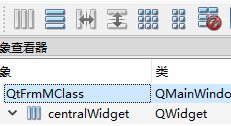

Qt使用过程中问题记录
Qt项目的相对路径不是项目位置，在pro文件中DESTDIR = $$PWD解决。
1.判断某个进程是否启动 1 2 3 4 5 6 7 8 9 10 11 12 13 14 15 16 17 18 19 20 21 22 bool checkOnly () HANDLE m_hMutex = CreateMutexW (NULL , FALSE, L"MotionControl" ); if (GetLastError () == ERROR_ALREADY_EXISTS) { CloseHandle (m_hMutex); m_hMutex = NULL ; return false ; } else return true ; } if (checkOnly () == false ){ QMessageBox::warning (nullptr , "提示" , "软件已经启动" , QMessageBox::Ok, QMessageBox::No); return 0 ; }
2.美化 1.样式表qss使用 1.Qt编辑器里面使用
“右键项目”—“添加新文件”，选择“Qt类”—再选择“Qt Resource File”
右键“qss.qrc”—“add prefix”—prefix名 就是后面读文件用到的名。
prefix名 是123—qssFile(“:/123/1.qss”);
1 2 3 4 5 6 7 8 9 QString qss; QFile qssFile (":/1.qss" ) ;qssFile.open (QFile::ReadOnly); if (qssFile.isOpen ()){ qss = QLatin1String (qssFile.readAll ()); qApp->setStyleSheet (qss); qssFile.close (); }
2.vs里面使用
直接使用，注意qss文件路径。
1 2 3 4 5 6 7 8 9 10 11 12 QString qss; QFile qssFile ("1.qss" ) ;qssFile.open (QFile::ReadOnly); if (qssFile.isOpen ()){ qss = QLatin1String (qssFile.readAll ()); qApp->setStyleSheet (qss); qssFile.close (); } btn->clear ();
3.全局使用字体
1 2 3 QApplication a (argc, argv) ;QFont f ("KaiTi" , 10 ) ;a.setFont (f);
3.控件 1.combobox下拉选择 1 2 3 4 comboBox->addItem ("Option" ); QString currentText = comboBox->currentText (); int currentIndex = comboBox->currentIndex ();connect (LComboBox,SIGNAL ( QComboBox::currentIndexChanged), this , SLOT (boxTxt ()));
它显示多个窗口部件，但只有一个窗口部件是可见的。
1 ui.stackedWidget->setCurrentIndex (0 );
2.属性
isHiden，返回本身的隐藏属性，控件是否可见跟主控件是否可见有关。
isVisible 判断控件是否可见，发送 SW_HIDE时，同步更新isVisible
1 2 3 if (m_pAxisConFrm->isVisible ()){m_pAxisConFrm->setFocus ();}else {m_pAxisConFrm->show ();}
3.临时变量创建控件后续修改 创建
1 2 3 4 5 6 7 QStatusBar* _pStatus = new QStatusBar (this ); QLabel*temLabel = new QLabel (this ); temLabel->setText ("11" ); _pStatus->addWidget (temLabel); temLabel->setObjectName ("LVertion" ); this ->setStatusBar (_pStatus);
修改
1 2 3 4 5 QLabel* temLabel = (QLabel*)this ->findChild <QLabel*>("LVertion" ); if (temLabel != nullptr ){ temLabel->setText (QString ("总数:%1" ).arg (g_flow->m_BasePar.nCount)); }
5.控件插入布局的位置
1 2 int idex = ui.LefVLayout->indexOf (ui.model);ui.LefVLayout->insertWidget (idex, StartBtn);
4.界面 1.登录显示主界面
main函数中取消w->show();
在主界面构造函数的合适的位置启用认证。
认证成功调用类的show函数。
1 2 3 4 if (QMessageBox::question (this , tr ("提示" ), tr ("确定启动软件？" ), QMessageBox::StandardButton::Yes, QMessageBox::StandardButton::No) == QMessageBox::Yes){ QtExe::show (); }
2.关闭软件确认操作
主界面类.h声明
1 void closeEvent (QCloseEvent* event) override
.c文件中实现
1 2 3 4 5 6 7 8 9 10 11 void QtExe::closeEvent (QCloseEvent* e) if (QMessageBox::question (this , tr ("提示" ),tr ( "确定要关闭软件" ), QMessageBox::StandardButton::Yes, QMessageBox::StandardButton::No) == QMessageBox::Yes) { e->accept (); } else { e->ignore (); } }
3.界面操作 工具条左靠齐或右靠齐 1 2 3 4 5 QWidget* spacer = new QWidget (); spacer->setSizePolicy (QSizePolicy::Expanding, QSizePolicy::Expanding); ui.mainToolBar->addWidget (StartBtn); ui.mainToolBar->addWidget (spacer);作为分界线 ui.mainToolBar->addWidget (MinBtn);
鼠标拖动工具栏移动 1 2 3 4 5 6 7 8 9 10 11 12 13 14 15 16 17 18 19 20 21 22 23 24 25 26 27 28 29 30 31 32 33 34 35 36 37 void mousePressEvent (QMouseEvent* evt) override void mouseMoveEvent (QMouseEvent* evt) override void mouseReleaseEvent (QMouseEvent* event) override bool isB=false ;QPoint mOffset; void QtFrmM::mousePressEvent (QMouseEvent* evt) if ((evt->pos ().x () < ui.mainToolBar->width ()) && (evt->pos ().y () < ui.mainToolBar->height ())) { if (evt->button () == Qt::LeftButton) { isB = true ; mOffset = evt->globalPos () - this ->pos (); } if (evt->button () == Qt::RightButton) { } } else { isB = false ; } } void QtFrmM::mouseMoveEvent (QMouseEvent* evt) if (isB) { this ->move (evt->globalPos () - mOffset); } } void QtFrmM::mouseReleaseEvent (QMouseEvent* event) isB = false ; }
2布局 
先给centralWidget一个整体布局，在添加局部布局，在添加控件，界面在放大缩小时，才能自适应变化。
5.Qt新项目直接使用已有UI文件 将ui拷贝到文件夹下，添加现有ui文件，直接编译会生成ui文件对应的.h文件。
更改界面cpp文件，include原有ui的.h文件改为现在的ui文件的.h文件。
并将主类的类名修改为ui文件中的类名(txt打开ui文件可查看)。
6.QT .pro文件 .pro文件是qmake用来生成makefile文件的中间文件。新建简单Qt工程，默认生成 .pro文件内容如下
1 2 3 4 5 6 7 8 9 10 11 12 13 14 15 16 17 18 19 20 21 22 23 24 25 26 27 28 29 30 31 32 33 34 35 36 37 38 39 40 41 42 43 44 45 46 47 48 49 50 51 52 53 54 55 56 57 58 59 60 61 62 63 64 65 66 # [QT+= ]语法，定义该工程包含的Qt模块 QT += core gui # 由于Qt5将widgets模块从gui模块独立出来了，所以定义Qt主版本大于4 就要包含widgets模块 greaterThan (QT_MAJOR_VERSION, 4 ): QT += widgets# 编译宏，使用c++17 编译 CONFIG += c++17 # 也可以 CONFIG -= # CONFIG -= debug 不编译debug类型 # You can make your code fail to compile if it uses deprecated APIs. # In order to do so, uncomment the following line. # DEFINES += QT_DISABLE_DEPRECATED_BEFORE=0x060000 # disables all the APIs deprecated before Qt 6.0.0 # 需要编译的源文件路径（项目根目录的相对路径） SOURCES += \ main.cpp \ widget.cpp # 需要编译的头文件路径（项目根目录的相对路径） HEADERS += \ widget.h # 需要编译的ui文件路径（项目根目录的相对路径） FORMS += \ widget.ui # 只知道是设置目标可以执行文件路径的，具体语法看不懂，如果你知道欢迎评论区留言 # Default rules for deployment. qnx: target.path = /tmp/$${TARGET}/bin else : unix:!android: target.path = /opt/$${TARGET}/bin!isEmpty (target.path): INSTALLS += target # 目标可执行文件的名称，不指定默认为工程名 TARGET = exe_name # 目标可执行文件的存放目录，不指定默认为realse目录 # 几个指定目录的符号： # 宏 $$PWD 代表当前目录和 ./ 等效 # ../ 代表上一级目录 DESTDIR = exe_dir # 编译宏开关，根据不同宏作不同的编译 DEFINES += defines # obj文件目录，即 .o 文件 OBJECTS_DIR = obj_dir # 资源文件路径，包括图片、音频等（项目根目录的相对路径） RESOURCES += res.rc # 链接库路径（项目根目录的相对路径） DEPENDPATH += depend_dir # 链接库文件（项目根目录的相对路径） LIBS += -Llib_name # 也可以直接写带路径的链接库文件 LIBS += -Llib_dir_name # 引用库头文件路径（项目根目录的相对路径） INCLUDES += include_dir # 项目使用的模板类型 TEMPLATE = app TEMPLATE = lib
7.QT打包exe 1 2 D:\QT\5.12 .3 \msvc2017_64\bin\windeployqt.exe D:\1 code\mqtt\QtWidgets\x64\Debug\QtWidgets.exe
&&BUG&&
使用Qt注意包含Q_OBJECT宏
connect连接信号槽时，要保证信号和槽都被定义